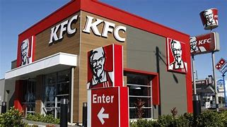
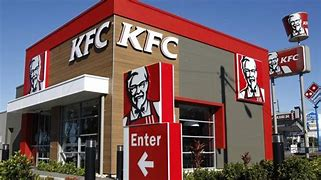

KFC (abbr. for Kentucky Fried Chicken ) is an American fast food restaurant chain headquartered in Louisville, Kentucky that specializes in fried chicken. It is the world's second-largest restaurant chain
KFC's original product is pressure fried chicken pieces, seasoned with Sanders' recipe of 11 herbs and spices. The constituents of the recipe are a trade secret. Larger portions of fried chicken are served in a cardboard "bucket", which has become a feature of the chain since it was first introduced by franchisee Pete Harman in 1957. Since the early 1990s, KFC has expanded its menu to offer other chicken products such as chicken fillet sandwiches and wraps, as well as salads and side dishes such as French fries and coleslaw, desserts and soft drinks; the latter often supplied by PepsiCo. KFC is known for its slogans "It's Finger Lickin' Good!", "Nobody does chicken like KFC" and "So good".
Come and get some finger licking good fried chicken in pine city mall.
 
